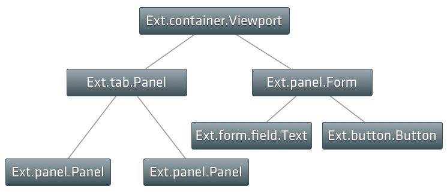
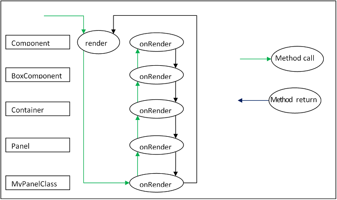
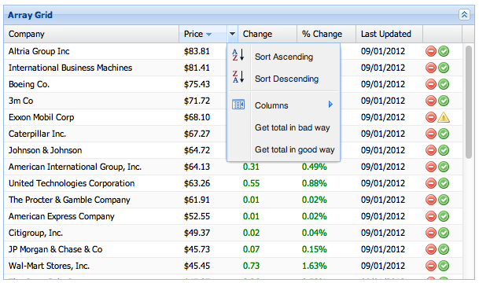
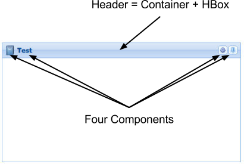

ExtJs 4 - Components, Layouts & Performance
Радик Фаттахов, БАРС Груп
Twitter @radikft
UI for ExtJs App = Components
Component hierarchy
var childPanel1 = Ext.create('Ext.panel.Panel', {
title: 'Child Panel 1',
html: 'A Panel'
});
var childPanel2 = Ext.create('Ext.panel.Panel', {
title: 'Child Panel 2',
html: 'Another Panel'
});
Ext.create('Ext.container.Viewport', {
items: [ childPanel1, childPanel2 ]
});Ext.create('Ext.tab.Panel', {
renderTo: Ext.getBody(),
height: 100,
width: 200,
items: [
{
xtype: 'panel',
title: 'Tab One',
html: 'The first tab',
listeners: {
render: function() {}
}
}
]
});
Создание собственных компонент
Ext.define('My.custom.Component', {
extend: 'Ext.Component'
});Template methods
Template methods
Ext.define('My.custom.Component', {
extend: 'Ext.Component',
onRender: function() {
this.callParent(arguments); // call the superclass onRender method
}
});Template methods
- initComponent
- onEnable
- onResize
- beforeComponentLayout
Как правильно выбрать родительский класс?
Layouts & Containers
Containers

Demo
How the layout system works
doLayout

Performance
Performance
function badTotalFn(menuItem) {
var r = store.getRange(),
total = 0;
Ext.Array.each(r, function(rec) {
total += rec.get(menuItem.up('dataIndex').dataIndex);
});
}Performance
function goodTotalFn(menuItem) {
var r = store.getRange(),
field = menuItem.up('dataIndex').dataIndex;
total = 0;
for (var j = 0, l = r.length; j < l; j++) {
total += r[j].get(field);
}
}| Browser | Bad | Good |
|---|---|---|
| Chrome | 1700ms | 10ms |
| IE9 | 18000ms | 500ms |
| IE6 | Gave up | 532ms |
Уменьшайте количество изменения DOM
{
xtype: "tabpanel",
items: [{
title: "Results",
items: {
xtype: "grid"
...
}
}]
}Уменьшайте количество изменения DOM
{
xtype: "tabpanel",
items: [{
title: "Results",
xtype: "grid",
...
}]
}Почему это так важно?
Что происходит при render
- beforeRender
- DomHelper создает DOM
- HTML вставляется в document
- onRender связывает DOM-element с компонентом
Пример
Ext.create('Ext.panel.Panel', {
width: 400, height: 200,
icon: '../shared/icons/fam/book.png',
title: 'Test',
tools: [{
type: 'gear'
}, {
type: 'pin'
}],
renderTo: document.body
});Пример
Избегайте ограничений где это возможно
- minWidth
- minHeight
- maxWidth
- maxHeight